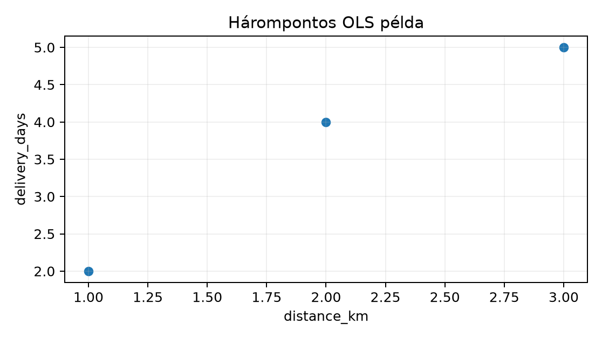

Belépő · [BŐVÍTŐ MODUL] · szint: haladó · idő: 90 perc · eszköz: pandas, statsmodels
Előfeltétel: 20.3. alfejezet · Célkészség: V. ellenőrző pont: modell és következtetés · Kimenet: projektartefaktum és ellenőrzött futtatási jegyzőkönyv.
A logisztikai vezető ugyanarra a Northstar-adathalmazra három különböző kérdést tesz fel. A bemenet közös, de a megfigyelési egység, a cél és az érvényességi feltétel nem.
distance_km és a
delivery_days közötti kapcsolat, és mekkora a becslés
bizonytalansága? Megfigyelési egység: rendelés. Elsődleges ellenőrzés:
regressziós koefficiens, standard error, konfidenciaintervallum.Induló feladat a továbbolvasás előtt: írd le, Q1-hez miért nem t-próba, Q2-höz miért nem AUC-optimalizálás, Q3-hoz miért nem múltbeli rendelésekből számított korreláció a megfelelő elsődleges eszköz.
A regresszió itt a feltételes várható érték modellezése. A Q2 egyszerű lineáris modellje:
Jelölés: a távolság km-ben (egydimenziós, hosszú vektor), a kézbesítési napok száma (pozitív egész, hosszú vektor), a tengelymetszet napban, a meredekség nap/km egységben, az a hibatag, amelyet a modell nem magyaráz. A legkisebb négyzetek becslője:
A bizonytalanság a becslő ismételt mintavételi szórásán keresztül jelenik meg:
ahol a reziduum, az illesztett érték. A 95%-os konfidenciaintervallum . Ez az eljárás ismételt mintavételi lefedettségét írja; nem azt állítja, hogy a paraméter 95% valószínűséggel az aktuálisan kiszámolt intervallumban van. Ezt a különbséget a 16.4. alfejezet inferencia-anyaga és a 19.4. alfejezet bayesi frissítés már bevezette.
A prediktív cél ezzel szemben nem egy paraméter, hanem egy döntési valószínűség. Ha a késés becsült valószínűsége és a tény, akkor a log loss:
ahol skalár, bináris, a tesztrendelések száma. A time split a predikció pillanatát védi: a modellnek a jövőbeli rendelésekhez hasonló helyzetben kell döntenie, ezért a felosztás időben rendezett, nem véletlen.
Az oksági kérdéshez potenciális kimenetelek kellenek. Jelölje és az ügyfél konverzióját kezeléssel és anélkül. A valódi átlagos kezelési hatás:
Csak figyelhető meg, ahol a randomizált kezelés. A randomizálás garantálja, hogy független a potenciális kimenetelektől, ezért:
Ezért az ITT-elemzés nevezője minden randomizált ügyfél, nem csak a válaszolók. A bayesi alternatíva ezzel szemben prior és likelihood kombinációjából posterior eloszlást ad: ; bináris konverziónál például a Beta-Binomial modell posteriorja , ahol a sikerek, a próbák száma, prior pszeudo-megfigyelések. A credible interval ekkor közvetlen valószínűségi állítás a posteriorról, de a prior választás feltétele mellett.
A példa nem a teljes Northstar CSV-t használja, hanem 6 soros, kézzel
ellenőrizhető tanuló DataFrame-et; a logika változatlan a 8.4. alfejezetben előállított rendelésszintű
táblára. Mentsük s080_checkpoint.py néven, és futtassuk a
lab projektgyökeréből: uv run python s080_checkpoint.py
(Linux/macOS; Windows PowerShellben ugyanez, ha a uv a
PATH-ban van). A példa determinisztikus, ezért seed nem szükséges; a
valódi bootstrapnél a seedet a futásnapló rögzítené.
# s080_checkpoint.py — futtatás: uv run python s080_checkpoint.py
import pandas as pd
import numpy as np
import statsmodels.formula.api as smf
# 1) Időbeli split label-availability szűréssel
orders = pd.DataFrame({
"order_id": ["o1", "o2", "o3", "o4", "o5", "o6"],
"order_ts": pd.to_datetime([
"2025-04-28T10:00:00+00:00", "2025-04-29T10:00:00+00:00",
"2025-04-30T10:00:00+00:00", "2025-05-01T10:00:00+00:00",
"2025-05-02T10:00:00+00:00", "2025-05-03T10:00:00+00:00"]),
"label_available_at": pd.to_datetime([
"2025-04-30T10:00:00+00:00", "2025-05-03T10:00:00+00:00",
"2025-05-02T10:00:00+00:00", "2025-05-05T10:00:00+00:00",
"2025-05-05T10:00:00+00:00", "2025-05-07T10:00:00+00:00"]),
"target_late": [0, 1, 0, 1, 0, 1],
})
cutoff = pd.Timestamp("2025-05-01T00:00:00+00:00")
train_mask = (orders["order_ts"] < cutoff) & (orders["label_available_at"] < cutoff)
test_mask = orders["order_ts"] >= cutoff
purged_mask = (orders["order_ts"] < cutoff) & (orders["label_available_at"] >= cutoff)
print("train:", orders.loc[train_mask, "order_id"].tolist())
print("test:", orders.loc[test_mask, "order_id"].tolist())
print("purged:", orders.loc[purged_mask, "order_id"].tolist())
assert train_mask.sum() + test_mask.sum() + purged_mask.sum() == len(orders)
# 2) OLS három ponton, kézi kontrollal
ols_df = pd.DataFrame({"distance_km": [1, 2, 3], "delivery_days": [2, 4, 5]})
fit = smf.ols("delivery_days ~ distance_km", data=ols_df).fit()
print("params:", fit.params.round(4).to_dict())
print("bse:", fit.bse.round(4).to_dict())
x = ols_df["distance_km"].to_numpy(dtype=float)
y = ols_df["delivery_days"].to_numpy(dtype=float)
beta1 = np.sum((x - x.mean()) * (y - y.mean())) / np.sum((x - x.mean()) ** 2)
beta0 = y.mean() - beta1 * x.mean()
print("manual:", {"intercept": round(beta0, 4), "slope": round(beta1, 4)})
# 3) Randomizált kísérlet kézi aggregálása
assign = pd.DataFrame({
"customer_id": ["c1", "c2", "c3", "c4", "c5", "c6"],
"variant": ["control", "treatment", "control", "treatment", "control", "treatment"],
})
outcome = pd.DataFrame({
"customer_id": ["c1", "c2", "c3", "c4", "c5", "c6"],
"conversion_7d": [0, 1, 0, 1, 1, 1],
})
exp = outcome.merge(assign, on="customer_id", validate="one_to_one")
p_c = exp.loc[exp.variant == "control", "conversion_7d"].mean()
p_t = exp.loc[exp.variant == "treatment", "conversion_7d"].mean()
se = np.sqrt(p_t * (1 - p_t) / 3 + p_c * (1 - p_c) / 3)
print({"p_control": p_c, "p_treatment": p_t, "itt": p_t - p_c, "se": round(se, 3)})A hárompontos regressziót szemlélteti:

A kód kimenete elméletileg várt, a kézi levezetéssel egyező; a könyvgeneráló ebben a módban nem futtatott Python-kódot, ezért a statisztikai csomag pontos képernyőformázását nem nevezzük mért eredménynek.
["o1", "o3"], a
purged sáv ["o2"], a test ["o4", "o5", "o6"].
Az o2 rendelést a cutoff előtt adták le, de a címkéje csak 2025-05-03-án
vált ismertté, ezért nem kerülhet a tanítóba; ha bekerülne, a modell
olyan címkét használna, amely a predikciós pillanatban nem állt
rendelkezésre. Az assert ellenőrzi, hogy a három halmaz diszjunkt és
teljes.params és bse kimenete ezeket
adja.validate="one_to_one" azt is ellenőrzi, hogy egy ügyfélhez
pontosan egy kimenet tartozik; az ITT-nevező így 6 marad, nem szorzódik
fel rendelésekre.Záróellenőrzés: az előrejelzés, az oksági hatásbecslés és a leíró becslés eltérő érvényességi feltételeket kíván. A beadandóban minden eredményhez legyen megadva a megfigyelési egység, a becslési cél, a döntési időpont és az adatkiválasztás indoka.
| Probléma | Kérdéstípus | Adatfeltétel | Ellenőrzés és elvetett alternatíva |
|---|---|---|---|
| Q1: rendeléskor becsüld a késés valószínűségét | prediktív | csak rendeléskori feature; idősplit; label-availability szűrés | AUC és kalibráció a testen; elvetett: koefficiens-t-próba és véletlen split |
| Q2: múltbeli távolság–késés kapcsolat | asszociációs/inferenciális | teljesült rendelések, megfigyeléses adat | OLS CI és reziduáldiagnosztika; elvetett: oksági állítás és AUC-maximalizálás |
| Q3: üzenet hatása a konverzióra | oksági | randomizált assignment, teljes 7 napos kimenet | ITT-különbség és intervallum; elvetett: megfigyeléses propensity és csak válaszolók nevezője |
A Q1 esetében a cél a jövőbeli rendeléseken elért döntési minőség.
Ezért a teszt az order_ts >= cutoff halmaz, a tanító
pedig csak olyan múltbeli rendeléseket tartalmazhat, amelyeknek a
címkéje a cutoff előtt megérkezett. A pontbecslés helyett a kalibrált
valószínűség számít, mert a logisztikai csapat küszöböt akar
állítani.
A Q2 célja egy paraméter és annak bizonytalansága. A
distance_km nem randomizált, ezért az együttható a
modellben szereplő többi változóra feltételes asszociáció. A megfelelő
ellenőrzés a standard error és a konfidenciaintervallum, nem pedig az,
hogy a modell mennyire jól prediktálja a múltat. Azt is le kell
ellenőrizni, hogy a reziduumokban nem marad-e nyilvánvaló struktúra.
A Q3 esetében a randomizálás teszi lehetővé a kauzális értelmezést. Az ITT az összes randomizált ügyfélre vonatkozik, függetlenül attól, hogy ki nyitotta meg az üzenetet. A csak válaszolókra szűkített elemzés szelekciós torzítást vinne be, ezért elvetjük.
A három eredmény nem rangsorolható egyetlen metrika szerint. Az alábbi rubrika külön oszlopban rögzíti a becslési célt, a mintaegységet, a független validációs állítást és az üzleti következményt:
| Kérdés | Becslési cél | Mintaegység | Független validációs állítás | Üzleti következmény |
|---|---|---|---|---|
| Q1 prediktív | egy rendelés | időbeli holdout: AUC, kalibráció, Brier; a teszt címkéi a cutoff után válnak ismertté | küszöb a proaktív értesítéshez; a téves riasztás és a kihagyott késés költsége | |
| Q2 asszociációs | feltételes együttható és konfidenciaintervalluma | egy teljesült rendelés | SE/CI és reziduáldiagnosztika; nem oksági állítás | a távolság szerepének megértése; nem beavatkozási döntés |
| Q3 oksági | ITT átlagos kezelési hatás | egy randomizált ügyfél | randomizált assignment, teljes 7 napos kimenet, előre rögzített alpha | bevezetés/elutasítás a teljes ügyfélkörre |
A rubrika szándékosan nem közös skálát ad: a Q1 AUC-ja, a Q2 CI-je és a Q3 ITT-hatása más kérdésre, más populáción és más érvényességi feltétellel érvényes. Egy „legjobb modell” kiválasztása a három közül értelmetlen; a döntéshez mindig a kérdéshez tartozó oszlopot kell használni. A Q2 eredményéből nem következik beavatkozási hatás, a Q1 AUC-jából nem következik oksági hatás, és a Q3 ITT-je nem predikciós pontosság.
orders
DataFrame-mel futtasd a splitet, és add meg a train, test és purged
halmazok order_id listáját. Ellenőrizd invariánsként, hogy
a trainben minden label_available_at < cutoff, a testben
minden order_ts >= cutoff, és a három halmaz uniója az
összes sor.train_test_split-et használ, és 0,92 teszt-AUC-t kap; az
időhelyes split 0,78-at ad. Mi a mechanizmus, amely az első számot
optimistává teszi? Adj egy konkrét javítási lépést a folyamatban.segment == "business" ügyfelekre futtatták. A stakeholder
azt kérdezi: mekkora a hatás a consumer szegmensben? Mit válaszolsz, és
milyen feltétellel lehetne a kérdést megválaszolni?["o1", "o3"], purged
["o2"], test ["o4", "o5", "o6"]. Invariánsok:
a trainben a label_available_at értékek
2025-04-30 és 2025-05-02, mindkettő
< cutoff; a test order_ts értékei mind
>= cutoff; a három halmaz hossza
,
és nincs átfedés. A purged sáv kihagyása azért kötelező, mert az o2
címkéje a cutoff pillanatában még nem ismert.A leggyakoribb csapda az, hogy egy jól illeszkedő modellt minden
kérdésre válaszként kezelünk. Tegyük fel, hogy a késésre hajlamos
ügyfelek nagyobb eséllyel választanak priority_flag
jelölést. Ekkor a múltbeli rendeléseken a prioritás és a késés között
pozitív asszociációt látunk, és a modell jó AUC-t érhet el. Ez nem
jelenti azt, hogy a prioritás okozza a késést, és azt sem, hogy
a prioritás megszüntetése csökkentené azt. Egy randomizált kísérletben a
hatás akár nulla is lehet. Az AUC tehát predikciós minőséget mér; az
oksági állításhoz design kell. A 16.4. alfejezet
ugyanezt a hatást p-érték és CI oldalról, a 19.4.
alfejezet posterior oldalról világította meg.
Önellenőrző kérdések: meg tudom-e mondani, miért más a konfidenciaintervallum és a credible interval állítása? A Q1 splitnél a purged sorok miért nem kerülhetnek a trainbe? A Q2 regressziós együtthatóját miért nem fogalmazhatom beavatkozási hatásként? A Q3 ITT-nevezőjében miért szerepel minden randomizált ügyfél?
Az V. ellenőrző pont azt rögzíti, hogy ugyanaz az adathalmaz más kérdésre más validációt igényel. A rendeléskori késésbecslés prediktív feladat: időbeli split, label-availability szűrés, AUC és kalibráció. A távolság–késés kapcsolat inferenciális kérdés: OLS, standard error és konfidenciaintervallum, de csak asszociációs nyelven. Az új üzenet hatása oksági kérdés: randomizálás, ITT és a frequentista intervallumtól eltérő bayesi értelmezés. A módszerválasztó jegyzőkönyv mindhárom problémához adatfeltételt, ellenőrzést és elvetett alternatívát rögzít. Következő lépésként a 21.1. alfejezet ezt a logikát a teljes tanítás-validáció-teszt folyamatra ülteti át.